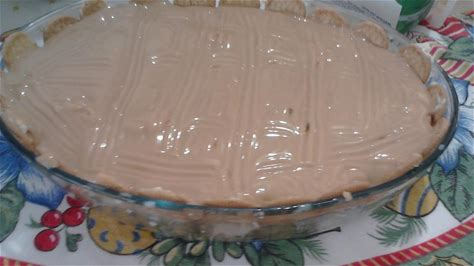
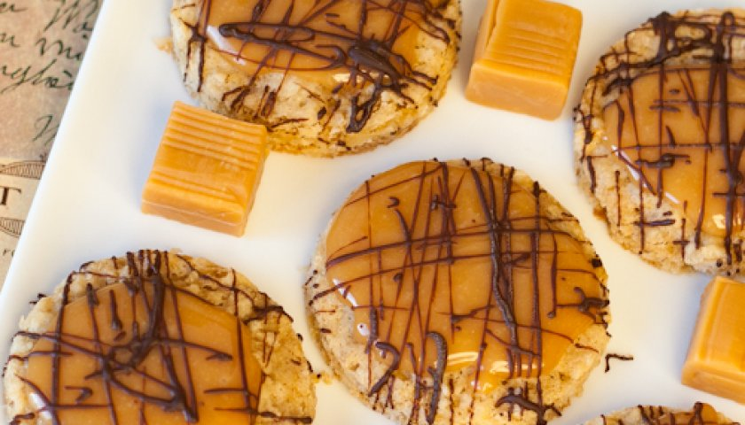

Algumas de nossas receitinhas!
Cupcakes de RedVelvet
Ingredientes:
Para o bolo
Açúcar 200g
Manteiga 190g
Farinha 150g
Fermento em pó 2g
Leite gordo 200ml
Sal 12 pitadas
Ovos inteiros 2
Ovo 1 gema
Avelãs 80g
Extrato de baunilha 5g (1 colher de chá)
Para a cobertura
Manteiga 150g
Açúcar inglês 150g
Avelãs em pedaços 20g
Modo de preparo:
Para o bolo: Numa tigela, misture a manteiga e o açúcar com uma batedeira elétrica. Depois, deite os ovos, um a um, inclusive a gema, e adicione o leite e uma colher de chá de extrato de baunilha até obter uma massa macia e consistente. Peneire a farinha e junte o fermento em pó e o sal. Combine estes ingredientes, mexendo lentamente de baixo para cima. Adicione as avelãs. Coloque um molde de papel dentro da forma de muffin e deite a mistura. Tenha cuidado para não encher mais de 3/4 da forma.
Para o creme de manteiga:
Numa tigela, bata a manteiga e o açúcar inglês até obter uma mistura macia e cremosa. Usando uma manga de pasteleiro com uma ponta em forma de estrela, decore os cupcakes. Polvilhe os cupcakes com avelãs e decore-os com um Ferrero Rocher em cima.
Bolo de cenoura
Ingredientes:

Para o bolo
2 xícaras (chá) de cenoura picada
4 ovos
2 xícaras (chá) de açúcar
2 xícaras (chá) de farinha de trigo
1 xícara (chá) de óleo
1 colher (café) de fermento em pó
Cobertura
1 lata de leite condensado
1 caixinha de creme de leite
1 colher cheia de margarina
3 colheres cheias de chocolate em pó
Modo de preparo
1-Separe as claras das gemas.
2-Bata as claras em neve e reserve.
3-No liquidificador coloque a cenoura, o óleo e as gemas e bata por 5 minutos.
4-Em uma tigela misture a farinha de trigo, o fermento e o açúcar, misture bem.
5-Depois junte os ingredientes batidos, misture bem, por último junte as claras em neve.
6-Em uma assadeira untada leve para assar em forno médio, pré-aquecido, por aproximadamente 40 minutos, ou até que fure com um palito e ele saia limpo.
7-Cobertura: Leve todos os ingredientes ao fogo e mexa até que desgrude da panela.
Pavê de Doce de Leite
Ingredientes:

Para o Creme
1 lata de leite condensado
1 lata de leite
200 ml de creme de leite
1/4 de xícara de amido de milho
350 gramas de doce de leite
Camada Biscoito
1 xícara de leite
1 colher de sopa de extrato de baunilha - opcional
2 pacotes de biscoito maisena - aproximadamente
Ganache de Chocolate
90 g de chocolate meio amargo
2 colheres de sopa de creme de leite
Modo de preparo
1-Comece misturando todos os ingredientes do creme em uma panela, até que forme um creme uniforme
2-Leve para cozinhar em fogo baixo até que o creme comece a engrossar bem
3-Não espere seu creme esfriar muito e já comece a montagem. Para isso, misture o leite e o extrato, caso vá usar, e molhe seus biscoitos, mas sem deixar amolecido demais
4-A primeira camada deve ser feita de biscoito. Depois disso vá alternando entre biscoito e creme, finalizando com o creme;
5-Caso deseje finalizar com o ganache, basta derreter o chocolate, misturar o creme de leite e espalhar por cima da última camada de creme
6-Leve para gelar por algumas horas e sirva bem gelado
Biscoitos de Caramelo Butter Toffees
Ingredientes:

1 xícara (chá) de açúcar mascavo
1 xícara (chá) de manteiga
1/2 colher (chá) de sal
1/2 colher (chá) de bicarbonato de sódio
3/4 xícara (chá) de coco ralado
1 1/5 xícaras (chá) de farinha de aveia
1 1/3 xícaras (chá) de farinha de trigo
1 unidade de ovo
1 colher (sobremesa) de essência de baunilha
28 unidades de bala de Butter Toffees (1 pacote de 130g contém 20 balas)
6 colheres (sopa) de creme de leite
100 gr de chocolate ao leite
Modo de Preparo
1. Na batedeira, bata o açúcar e a manteiga até ficar um creme fofo e claro.
2. Adicione o ovo e a baunilha.
4. Em outro bowl, misture a farinha, farinha de aveia, coco, fermento, bicarbonato e sal.
5. Acrescente o creme da batedeira na mistura seca.
6. Misture atédiv ficar homogêneo e bem incorporado.
7. Faça bolinhas e leve à geladeira por 15 minutos
8. Asse em forno a 200°C por 10-12 minutos.
9. Em uma panela, derreta as balas com o creme de leite, formando uma calda
10. Banhe os biscoitos com na calda e reserve.
11. Derreta o chocolate no microondas de 30 em 30 segundos.
12. Decore os biscoitos com o chocolate.
Brigadeiro de Leite Ninho com recheio de Nutella
Ingredientes:
 1 lata de leite condensado (395g)
2 colheres (de sopa) bem cheias de leite em pó
1/2 colher (de chá) de manteiga ou margarina
Nutella para rechear
1 lata de leite condensado (395g)
2 colheres (de sopa) bem cheias de leite em pó
1/2 colher (de chá) de manteiga ou margarina
Nutella para rechear
Modo de Preparo
1-Coloque o leite condensado e a manteiga em uma panela e leve ao fogo
2-Mexa sem parar em fogo baixo até começar a desgrudar da panela e você conseguir ver o fundo.
3-Adicione o leite ninho, (pode adicionar mais do que pede na receita)
4-Coloque num prato untado com manteiga e deixe esfriar.
5-Pegue um pouco da massa do brigadeiro, enrole uma bolinhas, abra na palma da mão recheie com um pouco de nutella.
6-Feche bem a bolinha, passe no leite ninho e coloque nas forminhas
li{
color: black; font-size: 22px;
}
ul{
color: black;
font-size: 22px;